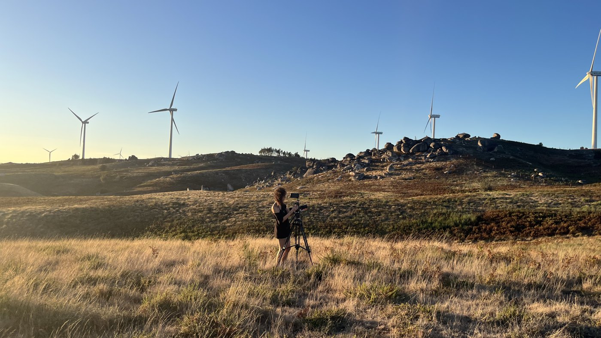

Francisca Montenegro

Francisca Montenegro é videógrafa e artista visual sediada no norte de Portugal. Iniciou o seu percurso durante a licenciatura em Artes Digitais e Multimédia na ESAD Matosinhos, onde começou a desenvolver uma prática centrada no vídeo como forma de observação e expressão emocional. O seu trabalho explora sobretudo a videografia documental, com especial interesse pela figura humana, pelas expressões e pelos gestos subtis.
Desenvolve trabalho na área da moda tendo já trabalhado com marcas muito relevantes nacionais e internacionais, onde assume frequentemente a direção criativa dos projetos, acompanhando todo o processo desde a construção de narrativas visuais, a direção artística até à pós-produção. O seu interesse centra-se na procura de naturalidade, privilegiando imagens que mantenham uma dimensão espontânea e autêntica. Atualmente dedica-se à criação de vídeo e ao registo de processos criativos, explorando a imagem em movimento como forma de proximidade e expressão sensível.
Vídeo · Braga